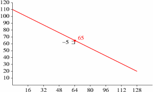
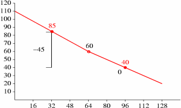
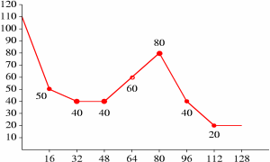

For the below example, we assume a floor setup with an [n] of 128. The list of selected X values in increasing order is 0,16,32,48,64,80,96,112 and 128. In list order, the values interleave as 0, 128, 64, 32, 96, 16, 48, 80 and 112. The corresponding list-order Y values as decoded from an example packet are 110, 20, -5, -45, 0, -25, -10, 30 and -10. We compute the floor in the following way, beginning with the first line:

We now draw new logical lines to reflect the correction to new_Y, and iterate for X positions 32 and 96:

Although the new Y value at X position 96 is unchanged, it is still used later as an endpoint for further refinement. From here on, the pattern should be clear; we complete the floor computation as follows:


A more efficient algorithm with carefully defined integer rounding behavior is used for actual decode, as described later. The actual algorithm splits Y value computation and line plotting into two steps with modifications to the above algorithm to eliminate noise accumulation through integer roundoff/truncation.
A partition class consists of a representation vector width (the number of Y values which the partition class encodes at once), a 'subclass' value representing the number of alternate entropy books the partition class may use in representing Y values, the list of [subclass] books and a master book used to encode which alternate books were chosen for representation in a given packet. The master/subclass mechanism is meant to be used as a flexible representation cascade while still using codebooks only in a scalar context.
1) [floor1_partitions] = read 5 bits as unsigned integer
2) [maximum_class] = 0
3) iterate [i] over the range 0 ... [floor1_partitions]-1 {
4) vector [floor1_partition_class_list] element [i] = read 4 bits as unsigned integer
}
5) [maximum_class] = largest integer scalar value in vector [floor1_partition_class_list]
6) iterate [i] over the range 0 ... [maximum_class] {
7) vector [floor1_class_dimensions] element [i] = read 3 bits as unsigned integer and add 1
8) vector [floor1_class_subclasses] element [i] = read 2 bits as unsigned integer
9) if ( vector [floor1_class_subclasses] element [i] is nonzero ) {
10) vector [floor1_class_masterbooks] element [i] = read 8 bits as unsigned integer
}
11) iterate [j] over the range 0 ... (2 exponent [floor1_class_subclasses] element [i]) - 1 {
12) array [floor1_subclass_books] element [i],[j] =
read 8 bits as unsigned integer and subtract one
}
}
13) [floor1_multiplier] = read 2 bits as unsigned integer and add one
14) [rangebits] = read 4 bits as unsigned integer
15) vector [floor1_X_list] element [0] = 0
16) vector [floor1_X_list] element [1] = 2 exponent [rangebits];
17) [floor1_values] = 1
18) iterate [i] over the range 0 ... [floor1_partitions]-1 {
19) iterate [j] over the range 0 ... ([floor1_class_dimensions] element [i])-1 {
20) vector [floor1_X_list] element ([j] + [floor1_values]) =
read [rangebits] bits as unsigned integer
}
21) [floor1_values] = [floor1_values] + [floor1_class_dimensions] element [i]
}
19) done
An end-of-packet condition while reading any aspect of a floor 1
configuration during setup renders a stream undecodable. In
addition, a [floor1_class_masterbooks] or
[floor1_subclass_books] scalar element greater than the
highest numbered codebook configured in this stream is an error
condition that renders the stream undecodable.
packet decode
Packet decode begins by checking the [nonzero] flag:
1) [nonzero] = read 1 bit as booleanIf [nonzero] is unset, that indicates this channel contained no audio energy in this frame. Decode immediately returns a status indicating this floor curve (and thus this channel) is unused this frame. (A return status of 'unused' is different from decoding a floor that has all points set to minimum representation amplitude, which happens to be approximately -140dB). Assuming [nonzero] is set, decode proceeds as follows:
1) [range] = vector { 256, 128, 86, 64 } element ([floor1_multiplier]-1)
2) vector [floor1_Y] element [0] = read ilog([range]-1) bits as unsigned integer
3) vector [floor1_Y] element [1] = read ilog([range]-1) bits as unsigned integer
4) [offset] = 2;
5) iterate [i] over the range 0 ... [floor1_partitions]-1 {
6) [class] = vector [floor1_partition_class] element [i]
7) [cdim] = vector [floor1_class_dimensions] element [class]
8) [cbits] = vector [floor1_class_subclasses] element [class]
9) [csub] = (2 exponent [cbits])-1
10) [cval] = 0
11) if ( [cbits] is greater than zero ) {
12) [cval] = read from packet using codebook number
(vector [floor1_class_masterbooks] element [class]) in scalar context
}
13) iterate [j] over the range 0 ... [cdim]-1 {
14) [book] = array [floor1_subclass_books] element [class],([cval] bitwise AND [csub])
15) if ( [book] is not less than zero ) {
16) vector [floor1_Y] element ([j]+[offset]) = read from packet using codebook
[book] in scalar context
} else [book] is less than zero {
17) vector [floor1_Y] element ([j]+[offset]) = 0
}
}
18) [offset] = [offset] + [cdim]
}
19) done
An end-of-packet condition during curve decode should be considered a
nominal occurrence; if end-of-packet is reached during any read
operation above, floor decode is to return 'unused' status as if the
[nonzero] flag had been unset at the beginning of decode.
Vector [floor1_Y] contains the values from packet decode
needed for floor 1 synthesis.
curve computation
Curve computation is split into two logical steps; the first step
derives final Y amplitude values from the encoded, wrapped difference
values taken from the bitstream. The second step plots the curve
lines. Also, although zero-difference values are used in the
iterative prediction to find final Y values, these points are
conditionally skipped during final line computation in step two.
Skipping zero-difference values allows a smoother line fit.
Although some aspects of the below algorithm look like inconsequential optimizations, implementors are warned to follow the details closely. Deviation from implementing a strictly equivalent algorithm can result in serious decoding errors.
1) [range] = vector { 256, 128, 86, 64 } element ([floor1_multiplier]-1)
2) iterate [i] over the range 2 ... [floor1_values]-1 {
3) [low_neighbor_offset] = low_neighbor([floor1_X_list],[i])
4) [high_neighbor_offset] = high_neighbor([floor1_X_list],[i])
5) [predicted] = render_point( vector [floor1_X_list] element [low_neighbor_offset],
vector [floor1_X_list] element [high_neighbor_offset],
vector [floor1_Y] element [low_neighbor_offset],
vector [floor1_Y] element [high_neighbor_offset],
vector [floor1_X_list] element [i] )
6) [val] = vector [floor1_Y] element [i]
7) [highroom] = [range] - [predicted]
8) [lowroom] = [predicted]
9) if ( [highroom] is less than [lowroom] ) {
10) [room] = [highroom] * 2
} else [highroom] is not less than [lowroom] {
11) [root] = [lowroom] * 2
}
12) if ( [val] is nonzero ) {
13) vector [floor1_step2_flag] element [low_neighbor_offset] = set
14) vector [floor1_step2_flag] element [high_neighbor_offset] = set
15) vector [floor1_step2_flag] element [i] = set
16) if ( [val] is greater than or equal to [room] ) {
17) if ( [hiroom] is greater than [lowroom] ) {
18) vector [floor1_final_Y] element [i] = [val] - [lowroom] + [predicted]
} else [hiroom] is not greater than [lowroom] {
19) vector [floor1_final_Y] element [i] = [predicted] - ([val] - [lowroom]) - 1
}
} else [val] is less than [room] {
20) if ([val] is odd) {
21) vector [floor1_final_Y] element [i] =
[predicted] - (([val] - 1) divided by 2 using integer division)
} else [val] is even {
22) vector [floor1_final_Y] element [i] =
[predicted] + ([val] / 2 using integer division)
}
}
} else [val] is zero {
23) vector [floor1_step2_flag] element [i] = unset
24) vector [floor1_final_Y] element [i] = [predicted]
}
}
25) vector [floor1_step2_flag] element [0] = set
26) vector [floor1_step2_flag] element [1] = set
27) vector [floor1_final_Y] element [0] = vector [floor1_Y] element [0]
28) vector [floor1_final_Y] element [1] = vector [floor1_Y] element [1]
29) done
Decode begins by sorting the scalars from vectors [floor1_X_list], [floor1_final_Y] and [floor1_step2_flag] together into new vectors [floor1_X_list]', [floor1_final_Y]' and [floor1_step2_flag]' according to ascending sort order of the values in [floor1_X_list]. That is, sort the values of [floor1_X_list] and then apply the same permutation to elements of the other two vectors so that the X, Y and step2_flag values still match.
Then compute the final curve in one pass:
1) [hx] = 0
2) [lx] = 0
3) [ly] = vector [floor1_final_Y]' element [0] * [floor1_multiplier]
4) iterate [i] over the range 1 ... [floor1_values]-1 {
5) if ( [floor1_step2_flag]' is set ) {
6) [hy] = [floor1_final_Y]' element [i] * [floor1_multiplier]
7) [hx] = [floor1_X_list]' element [i]
8) render_line( [lx], [hx], [ly], [hy], [floor] )
9) [lx] = [hx]
10) [ly] = [hy]
}
11) if ( [hx] is less than [n] ) {
12) render_line( [hx], [hy], [n], [hy], [floor] )
}
13) if ( [hx] is greater than [n] ) {
14) truncate vector [floor] to [n] elements
}
}
15) for each scalar in vector [floor], perform a lookup substitution using
the scalar value from [floor] as an offset into the vector [floor1_inverse_dB_static_table]
16) done
 Ogg is a Xiph.org Foundation effort
to protect essential tenets of Internet multimedia from corporate
hostage-taking; Open Source is the net's greatest tool to keep
everyone honest. See About
the Xiph.org Foundation for details.
Ogg is a Xiph.org Foundation effort
to protect essential tenets of Internet multimedia from corporate
hostage-taking; Open Source is the net's greatest tool to keep
everyone honest. See About
the Xiph.org Foundation for details.
Ogg Vorbis is the first Ogg audio CODEC. Anyone may freely use and distribute the Ogg and Vorbis specification, whether in a private, public or corporate capacity. However, the Xiph.org Foundation and the Ogg project (xiph.org) reserve the right to set the Ogg Vorbis specification and certify specification compliance.
Xiph.org's Vorbis software CODEC implementation is distributed under a BSD-like license. This does not restrict third parties from distributing independent implementations of Vorbis software under other licenses.
Ogg, Vorbis, Xiph.org Foundation and their logos are trademarks (tm) of the Xiph.org Foundation. These pages are copyright (C) 1994-2002 Xiph.org Foundation. All rights reserved.